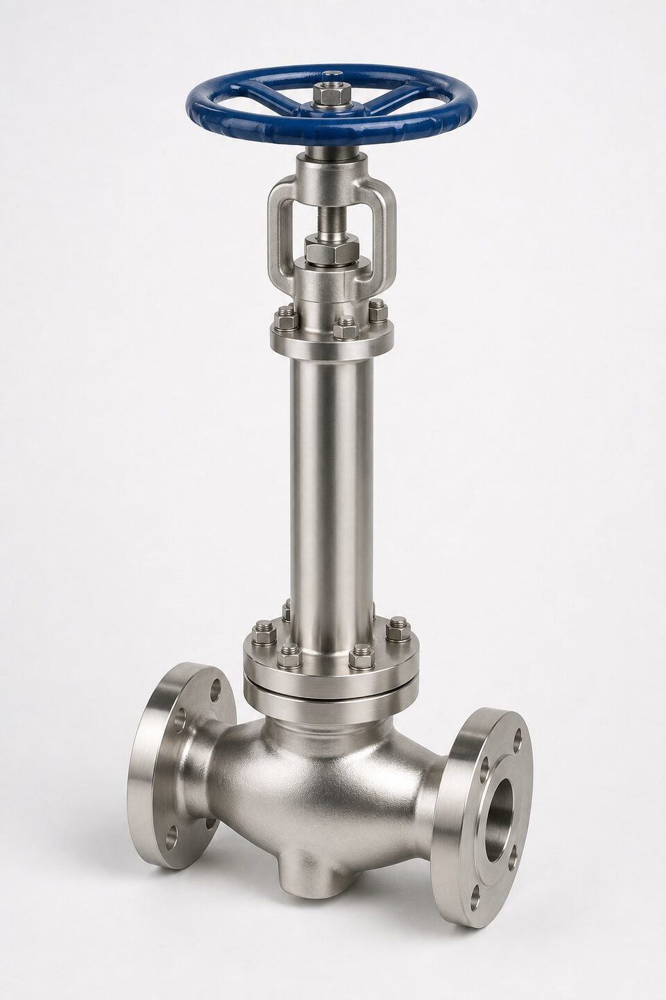

سرویس برودتی چیست؟
سرویس برودتی به سیالاتی گفته میشود که در دمای بسیار پایین نگهداری و حمل میشوند: گاز طبیعی مایع در حدود منفی صد و شصت درجه، نیتروژن و اکسیژن مایع، اتیلن و پروپیلن. در این دماها، مواد رفتاری کاملاً متفاوت دارند: فولاد کربنی ترد میشود، واشرها میشکنند و انقباض قطعات میتواند آببندی را از بین ببرد. به همین دلیل شیر این سرویسها یک محصول مهندسیشده ویژه است، نه نسخه سرد شده یک شیر معمولی.

بونت طویل و نقش آن
بونت طویل ستون اصلی طراحی شیر برودتی است: با بلند کردن فاصله بین بدنه سرد و پکینگ ساقه، پکینگ در دمای نزدیک محیط باقی میماند و از یخزدگی رطوبت اطراف ساقه جلوگیری میشود. اگر رطوبت روی ساقه یخ بزند، ساقه گیر میکند، پکینگ آسیب میبیند و نشتی شروع میشود. طول بونت بر اساس دمای کاری انتخاب میگردد و در دماهای پایینتر، بونت بلندتری لازم است. در شیرهای بزرگ، طراحی بونت باید تحمل بار عملگر را نیز داشته باشد.
متریالهای بدنه و تریم
- بدنه: استیلهای آستنیتی با چقرمگی تأییدشده در دمای کاری؛ برای بدنههای فورج از گریدهای فورج آستنیتی استفاده میشود.
- تریم و ساقه: استیل آستنیتی یا آلیاژهای نیکلدار متناسب با سیال.
- نشیمنگاه: در طرحهای نرم از مواد سازگار با دمای پایین استفاده میشود؛ در طرحهای فلزی، آببندی با پرداخت دقیق و نیروی نشستن مناسب.
- پیچها: آلیاژهای مناسب دمای پایین برای جلوگیری از ترد شدن.
- گسکتها: انواع مارپیچی با پرکننده مناسب برودت.
تستها؛ از بدنه تا برودت
علاوه بر تستهای معمول بدنه و نشیمنگاه در دمای محیط، شیر برودتی باید تست برودتی نیز بگذراند: شیر در سیال برودتی غوطهور شده و عملکرد ساقه، باز و بسته شدن و نشتی نشیمنگاه در دمای کاری واقعی بررسی میشود. این تست گران و زمانبر است اما تنها راه اثبات عملکرد در شرایط واقعی است. در سفارشهای پروژهای، تعداد نمونههای تست برودتی و معیارهای پذیرش باید صریح توافق شود تا در مرحله تحویل اختلاف ایجاد نشود.
ایمنی حفره بدنه و الزامات نصب
در شیرهای توپی برودتی، حفره بین دو نشیمنگاه میتواند مایع برودتی را محبوس کند؛ با گرم شدن، این مایع تبخیر شده و فشاری ایجاد میکند که میتواند بدنه را بترکاند. طراحی باید با تخلیه یکطرفه حفره به سمت بالادست، این خطر را حذف کند. در نصب نیز باید از ایجاد نقاط محبوس مشابه در خط پرهیز شود، عایقکاری تا حد بونت به درستی انجام شود و دسترسی برای بازرسی یخزدگیهای احتمالی حفظ گردد. در سرویس اکسیژن، الزامات پاکسازی چربی نیز به مجموعه اضافه میشود.
اشتباههای رایج در انتخاب و نصب شیر برودتی
تجربه پروژههای برودتی، چند اشتباه پرتکرار را نشان میدهد که آگاهی از آنها هزینههای سنگینی را پیشگیری میکند. اولین اشتباه، انتخاب شیر معمولی با تصور کارکرد در دمای پایین است؛ متریالهای کربنی در دمای برودتی ترد میشوند و این جایگزینی ذاتا غیرایمن است. دوم، نصب بونت طویل به صورت افقی یا در جهت نادرست است که باعث یخزدگی پکینگ و نشتی میشود؛ جهت نصب باید مطابق دستور سازنده و معمولا با زاویه مشخص باشد. سوم، عایقکاری نادرست بدنه است؛ پوشش عایق نباید مانع تبادل حرارت بونت شود، چون گرم ماندن ناحیه پکینگ برای عملکرد درست ضروری است. چهارم، نادیده گرفتن الزامات حفرهزدایی بدنه در شیرهایی که ممکن است سیال برودتی در حفره آنها محبوس و با گرم شدن منبسط شود. و در نهایت، تست راهاندازی باید شامل خنککاری تدریجی خط باشد؛ شوک برودتی ناگهانی میتواند به اتصالات و نشیمنها آسیب بزند و نشتیهای اولیه را در بدترین زمان آشکار کند.
جمعبندی
شیر برودتی یک محصول مهندسیشده است: بونت طویل متناسب با دما، متریال آستنیتی با چقرمگی تأییدشده، طراحی تخلیه حفره و تست برودتی. در استعلام، دمای کاری واقعی، سیال و الزامات تست را صریح ذکر کنید و مدارک تست برودتی را در فهرست تحویل بخواهید؛ این موارد تفاوت یک خرید مطمئن با یک ریسک پرهزینه را میسازند.
سوالات رایج
چرا شیر برودتی بونت طویل دارد؟
بونت بلند، پکینگ ساقه و عملگر را از سرمای شدید سیال دور نگه میدارد تا پکینگ در دمای کارکرد عادی باقی بماند و یخزدگی باعث گیر کردن ساقه نشود.
چرا از استیل آستنیتی استفاده میشود؟
فولادهای کربنی در دمای بسیار پایین ترد و شکننده میشوند. استیلهای آستنیتی چقرمگی خود را در این دماها حفظ میکنند و برای بدنه و تریم انتخاب میشوند.
تست برودتی چیست؟
تست عملکرد شیر در دمای کاری واقعی با غوطهوری در سیال برودتی، که عملکرد ساقه، نشیمنگاه و آببندی را در شرایط واقعی تأیید میکند.
حفره بدنه در شیر توپی برودتی چه خطری دارد؟
اگر مایع برودتی در حفره بدنه محبوس شود، با گرم شدن تبخیر شده و فشار خطرناکی ایجاد میکند. طراحی باید تخلیه یکطرفه حفره را تضمین کند.
مطالب مرتبط
- متریال بدنه شیرآلات
- متریال نشیمنگاه شیرآلات
- راهنمای جامع شیر توپی (بال ولو)
- راهنمای تست و معیارهای نشتی شیرآلات
با ذکر دمای کاری، سایز و کلاس، شیر برودتی با بونت طویل و متریال آستنیتی به همراه مدارک تست برودتی عرضه میشود.
مشاهده صفحه محصول ← ثبت RFQ همین محصولتامین این تجهیزات را به پیشرو تجهیز فرتاک بسپارید
شرکت پیشرو تجهیز فرتاک تامینکننده تخصصی تجهیزات صنعتی برای پروژههای نفت، گاز، پتروشیمی، فولاد و نیروگاهی است. برای دریافت پیشنهاد فنی و قیمت، استعلام (RFQ) خود را ثبت کنید تا کارشناسان مهندسی فروش در کوتاهترین زمان پاسخ دهند.
- تامین شیرآلات صنعتیخانواده کامل شیر با گواهی مواد و تست
- تامین تجهیزات صنایع نفت و گازپکیج مواد مطابق وندورلیست